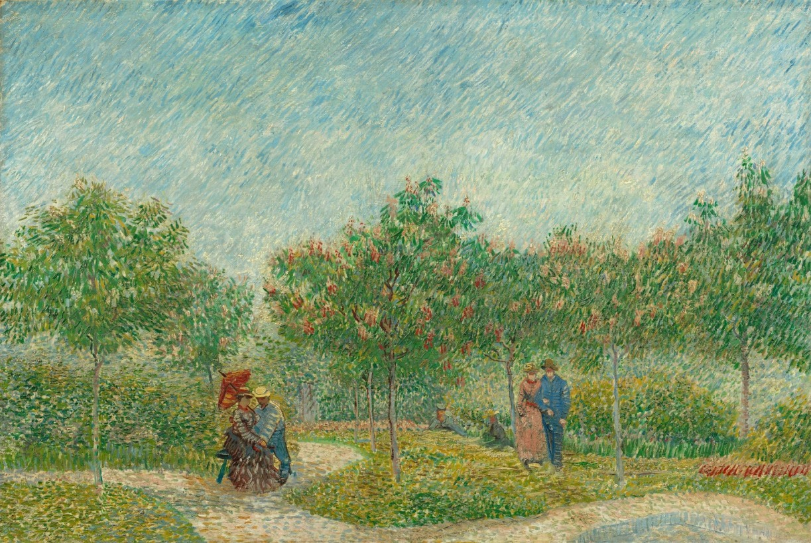

Vincent van Gogh was born in 1853 in the Netherlands. He showed an early interest in art but initially worked as an art dealer and preacher.
His artistic journey truly began in the late 1870s. He studied art in Belgium, focusing on realism and dark tones before transitioning into brighter colors.
Moving to Paris in 1886, Van Gogh was influenced by Impressionists and Post-Impressionists, adopting their vibrant colors and expressive brushwork.
In 1888, he moved to Arles, hoping to establish an artists’ community. Here, he created many of his famous works, including 'The Starry Night.'
Van Gogh struggled with mental health issues, leading to self-harm and hospitalization. Despite this, he continued to paint prolifically.
He tragically died in 1890 at the age of 37. Though he sold few paintings in his lifetime, he became one of the most celebrated artists in history.